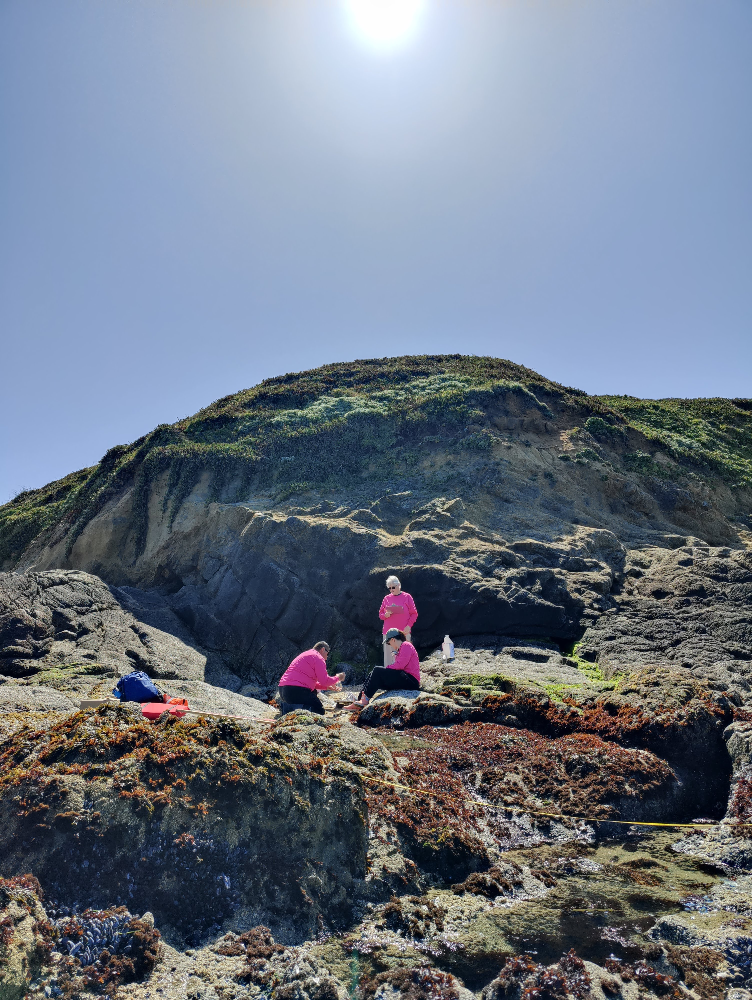

Microplastics Monitoring at the Bodega Marine Reserve
Microplastics are a type of pollutant that is mainly derived from the plastics that we use on almost every aspect of our lives. They are ubiquitous and can even infiltrate marine protected areas that are designed to offer refuge from pollution, habitat degradation, and other human impacts. To understand the impact of this pervasive type of pollution, we conduct repeated seasonal sampling at the Bodega Marine Reserve using standardized, contamination-minimizing protocols to track MPs in seawater, sediment, algae, grazing snails and mussels. We aim to create a dataset that will inform how microplastics accumulate overtime at different trophic levels.